La façon dont les traders utilisent l'IA est sur le point de changer complètement. Pendant ces deux dernières années, le jeu a été le même pour pratiquement tout le monde dans ce milieu. Vous regardez les graphiques, vous lisez l'analyse technique, vous vérifiez les portefeuilles des baleines manuellement, et vous essayez de saisir le mouvement avant tout le monde. Et honnêtement, c'est sur cela que j'ai bâti toute cette chaîne.
Interface & Outils : Financial Post, TradingView.
Contenu textuel & Code : Article financier sur l'IA dans les hedge funds, graphique de prix Bitcoin, indicateur de bandes, signaux Buy/Sell, indicateur de momentum et outil de position (Risk/Reward).
Action / Démonstration : Présentation d'un article d'actualité puis analyse de graphiques techniques sur le Bitcoin avec des indicateurs de tendance.
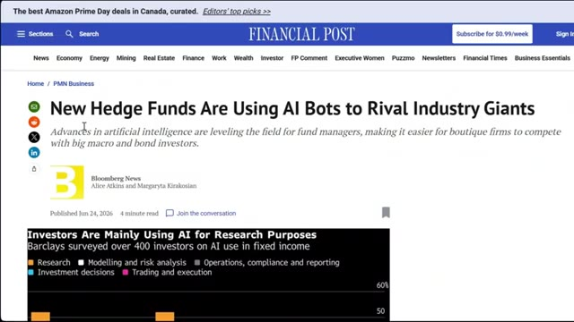
🔍 Agrandir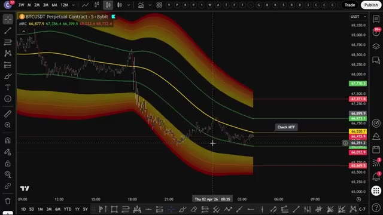
🔍 Agrandir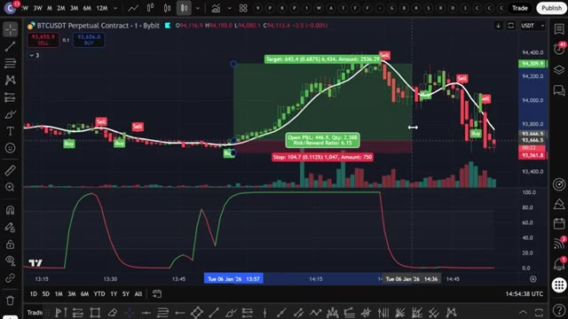
🔍 AgrandirAppeler les creux, appeler les sommets, partager mes trades avec vous tous les jours. Mais il y a un changement qui se produit en ce moment et auquel la plupart des traders ne prêtent pas attention. Alors que tout le monde est encore en train de rafraîchir manuellement Hyperliquid, de faire défiler les taux de financement à la main, et de tracer les supports et les résistances ligne par ligne, il y a un petit groupe de traders qui utilisent tranquillement Claude pour faire tout cela instantanément, automatiquement, pendant qu'ils dorment. Et ce que j'ai découvert après avoir parlé à beaucoup de traders dans ma communauté, c'est que la raison pour laquelle la plupart d'entre vous ne font pas encore cela n'est pas parce que c'est
Interface & Outils : TradingView, interface Web.
Contenu textuel & Code : Graphique en chandelier de Bitcoin (BTCUSDT) avec des lignes horizontales vertes (supports) et rouges (résistances).
Action / Démonstration : Analyse technique des niveaux de prix et des zones de support/résistance sur Bitcoin.
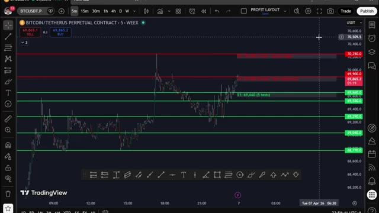
🔍 Agrandircompliqué. C'est parce que personne ne vous a réellement montré comment le configurer spécifiquement pour le trading. Tout le monde utilise l'IA pour écrire des e-mails ou créer une application aléatoire. Presque personne ne l'utilise pour lire ses graphiques, gérer ses positions et exécuter ses trades à sa place. Donc, dans cette vidéo, je vais vous montrer exactement comment je construirais une opération de trading entièrement automatisée en utilisant Claude si ma vie en dépendait. Lire automatiquement des graphiques TradingView, trader directement depuis Telegram sur votre téléphone, suivre en temps réel ce que font les "whales" (les gros investisseurs) du "smart money" sur Hyperliquid,
Interface & Outils : Tableau de bord analytique de marché (type Coinglass / Velo) et plateforme de cartographie TradingView (paires WEEX).
Contenu textuel & Code : - Métriques multi-actifs (BCH, ZEC, SP500, ADA, XAU, SUI, AVAX, CL, XAUT, ASTER) : prix spot, Funding Rate, Volume 24h, Market Cap et Open Interest (OI 1h / 24h). - Graphique BTCUSDT.P 5m : niveaux de support annotés S1 (69,660), S2 (69,530), S3 (69,290 - major bounce zone), S4 (69,040 - strongest support) et S5 (68,770), ainsi que des zones de résistance au-dessus du cours actuel (69,902 USDT).
Action / Démonstration : Analyse comparative du sentiment de marché via les données d'intérêt ouvert et de volume, puis identification précise des zones de liquidité et de rebond sur le graphique Bitcoin.
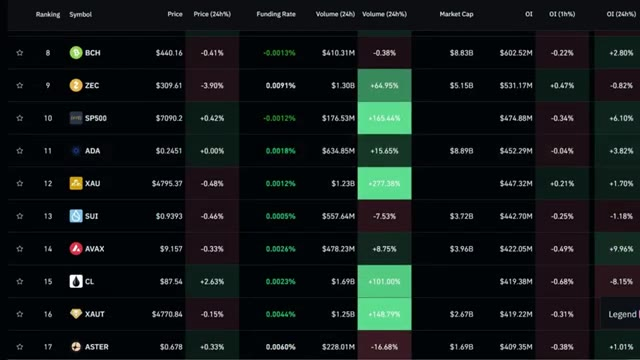
🔍 Agrandir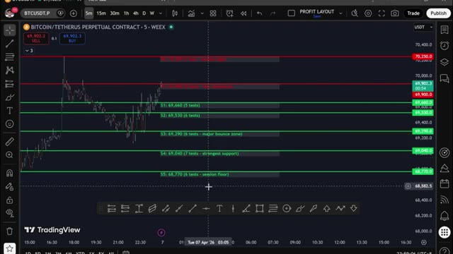
🔍 Agrandiret même de construire votre propre bot qui tourne 24 heures sur 24 et 7 jours sur 7 sans que vous ne touchiez à absolument rien. C'est l'un des plus grands avantages disponibles sur ce marché en ce moment, et c'est encore totalement sous le radar. Alors entrons dans le vif du sujet. Maintenant, très rapidement, avant de vous montrer tout ça, je veux que vous compreniez à quel point l'argent afflue réellement dans l'IA en ce moment, parce que cela explique exactement pourquoi cet avantage existe. Les grandes entreprises technologiques dépensent des dizaines de milliards de dollars chaque mois dans ces trucs. Amazon, Microsoft, Google et Meta, ces quatre entreprises à elles seules sont en passe de dépenser
Interface & Outils : Navigateur web affichant une plateforme de cours en ligne ('Trading AI Full Course').
Contenu textuel & Code : Liste de modules de formation de trading automatisé et d'infrastructure de bots (modules 21 à 26).
Action / Démonstration : Présentation du plan de cours et des étapes de construction d'un bot de trading en Python.
environ 725 milliards de dollars au total en 2026. Ce n'est pas une erreur de frappe. C'est plus d'argent que le PIB de la plupart des pays, qui sert entièrement à construire des outils d'IA plus intelligents et plus performants. Et tandis que tout cet argent est injecté dans les infrastructures, presque personne ne parle de ce que cela signifie pour nous en tant que traders. Ces outils deviennent en ce moment assez puissants pour analyser réellement vos graphiques, gérer votre risque et exécuter des trades à votre place. La plupart des gens n'ont tout simplement pas encore fait le rapprochement.
Interface & Outils : Navigateur web affichant des articles financiers, des blogs d'investissement (Value Add VC) et des données statistiques économiques.
Contenu textuel & Code : Chiffres du PIB mondial, catégories de dépenses en infrastructure IA en pourcentage, et liste des indicateurs de flux de données de marché.
Action / Démonstration : Navigation et défilement à travers des articles web illustrant les coûts massifs de l'IA et l'analyse de données sur les marchés financiers.
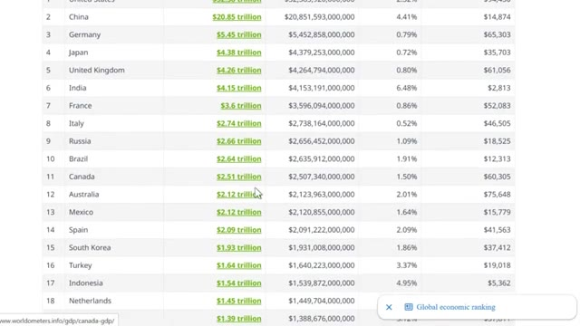
🔍 Agrandir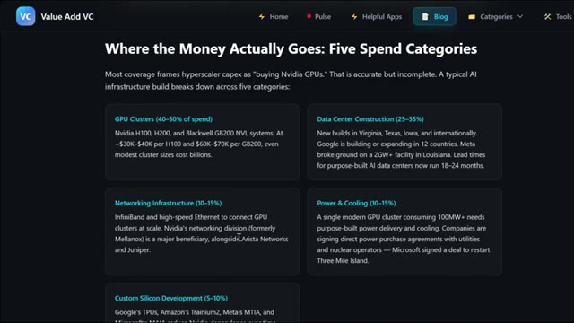
🔍 Agrandir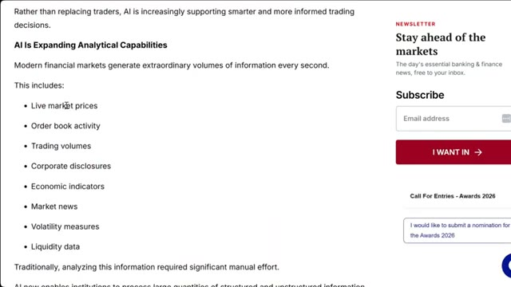
🔍 AgrandirDonc, pendant que cet argent continue d'affluer et que ces outils deviennent de plus en plus intelligents, les traders qui comprennent comment intégrer cela à leur trading dès maintenant sont ceux qui vont avoir une avance considérable. Et c'est exactement ce que je veux vous montrer. Alors laissez-moi vous montrer exactement à quoi cela ressemble. La première chose que je veux vous montrer, et c'est vraiment celle qui m'a bluffé la première fois que je l'ai vue. Claude lit l'historique des prix, identifie les niveaux les plus significatifs, les trace directement sur votre graphique, et vous indique lesquels comptent le plus en ce moment. Regardez le graphique. Lignes vertes
Interface & Outils : TradingView, Éditeur Pine Script, Terminal de commandes Claude Code.
Contenu textuel & Code : Code source Pine Script (calculs ATR, positions long/short) et terminal Claude Code avec message d'installation native.
Action / Démonstration : Présentation simultanée d'un script de trading technique sur TradingView et d'un outil de développement assisté par IA.
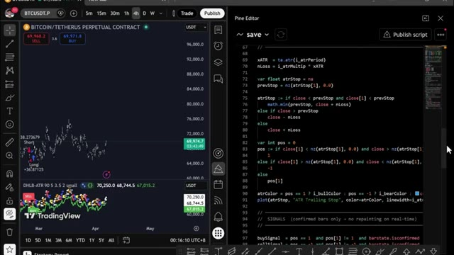
🔍 Agrandir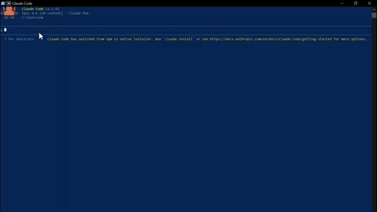
🔍 Agrandirpour le support, des lignes rouges pour la résistance, des étiquettes de prix. Le nombre de fois où chaque niveau a été testé, le tout tracé automatiquement, et ensuite il vous indique exactement où se situe le prix en ce moment par rapport à ces niveaux et vous donne un biais directionnel basé sur l'historique de la façon dont le prix a réagi à chacun d'eux. Cela me prenait autrefois 20 minutes à cartographier manuellement sur chaque graphique. Claude le fait en quelques secondes. Et ce n'est que le point de départ. Vous pouvez également demander à Claude d'écrire des stratégies PineScript complètes à partir d'un anglais simple, de déboguer vos indicateurs existants, d'exécuter une confluence multi-unités de temps complète
Interface & Outils : Graphique TradingView et terminal de commande d'analyse textuelle.
Contenu textuel & Code : Niveaux de prix (résistances et supports avec nombre de tests), notes d'analyse, position actuelle (69 891), biais (Cautiously Bearish) et règles de trading (Bollinger, RSI).
Action / Démonstration : Analyse automatique des niveaux de support/résistance, affichage de la position actuelle par rapport aux niveaux et description du biais directionnel.
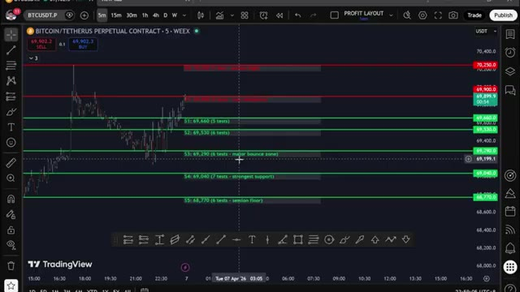
🔍 Agrandir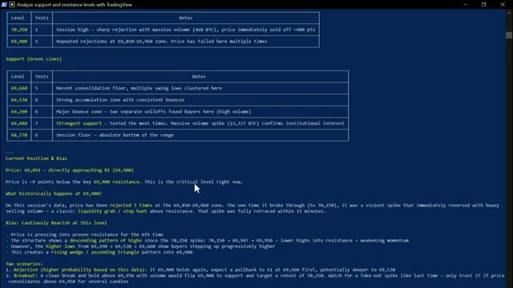
🔍 Agrandiranalyse sur les graphiques hebdomadaire, journalier, de quatre heures et d'une heure simultanément et obtiens une recommandation de trade spécifique avec un point d'entrée, un stop-loss et un take-profit, le tout à partir d'une seule invite, mais c'est là que ça devient entièrement mains libres : tu peux connecter n'importe laquelle de ces stratégies directement à ton exchange via un webhook TradingView. Lorsque ta stratégie déclenche un signal sur TradingView, Claude le reçoit instantanément par le webhook et exécute le trade automatiquement sur ton exchange.
Interface & Outils : Claude Code session (terminal) et TradingView.
Contenu textuel & Code : Tableau de rupture des timeframes (Weekly, Daily, 4-Hour, 1-Hour) avec EMA Trend, RSI, MACD, et niveaux clés de support et résistance. Recommandation de trade Long à 70,054$, Stop Loss à 62,405$ et Take Profit à 75,985$.
Action / Démonstration : Présentation du rapport d'analyse multi-timeframe généré automatiquement et visualisation graphique du prix du Bitcoin sur TradingView.
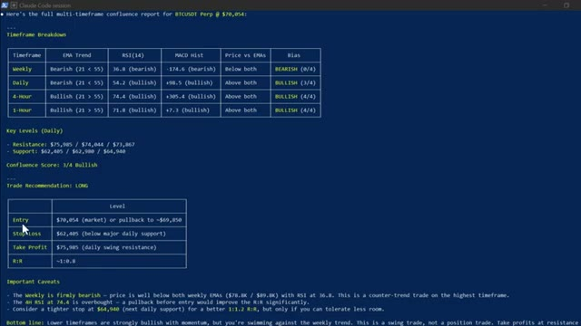
🔍 Agrandir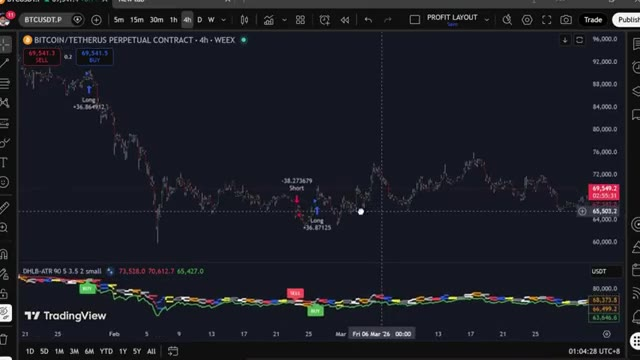
🔍 AgrandirEntrée, stop loss, take profit. Tout est fait. Sans que vous ne touchiez à rien, le signal est arrivé. Claude l'a traité. Trade ouvert. Confirmé en retour avec chaque détail. Vous construisez la stratégie une fois, et à partir de ce moment-là, elle tourne toute seule. Maintenant, la suivante, c'est celle qui a complètement changé ma routine quotidienne. J'ai créé mon propre assistant de trading IA en utilisant Claude et Telegram, et il trouve des trades rentables pour moi en utilisant l'IA la plus puissante disponible actuellement, plus intelligente que n'importe quel humain ne pourrait l'être.
Interface & Outils : Terminal CLI Claude Code session, plateforme d'analyse de flux Hyperdash, application Telegram (ClaudeTelegramBot).
Contenu textuel & Code : Commandes MCP TradingView (`chart_manage_indicator`, `chart_set_timeframe`, `data_get_ohlcv`), cours du BTC à 70 054 $, indicateurs EMA 21/55 et RSI/MACD, statistiques PnL et positions de smart money (Abraxas Capital, Cumberland), commandes d'appairage Telegram.
Action / Démonstration : Automatisation de l'analyse technique et de la détection de signaux via Claude Code, analyse des flux de positions Hyperdash et synchronisation du bot Telegram pour l'exécution et les alertes de trading à distance.
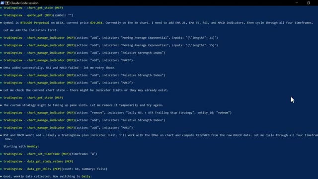
🔍 Agrandir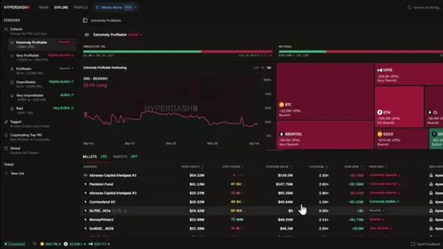
🔍 Agrandir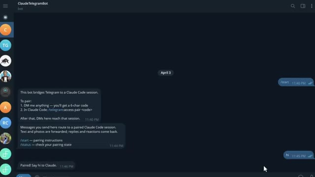
🔍 AgrandirIl exécute des trades, gère mes positions, m'envoie des alertes en temps réel et génère des rapports de portefeuille complets, le tout à partir d'un simple message sur mon téléphone. Ce matin, j'ai placé un trade depuis mon lit, pris des bénéfices depuis la salle de sport, sans toucher à un seul graphique. C'est Claude qui tourne sur mon ordinateur. Ça a l'air simple, juste une interface textuelle.
Interface & Outils : WEEX Portfolio Dashboard, Claude Telegram Bot, interface de trading crypto WEEX.
Contenu textuel & Code : Solde de portefeuille à $20.61, PnL journalier, ordres d'achat/vente automatisés sur BTCUSDT (LONG 5x), SOLUSDT (LONG 5x) et DOGEUSDT (SHORT 5x) avec niveaux de Stop Loss et Take Profit.
Action / Démonstration : Consultation du tableau de bord des performances et de l'historique des transactions exécutées par le bot Telegram.
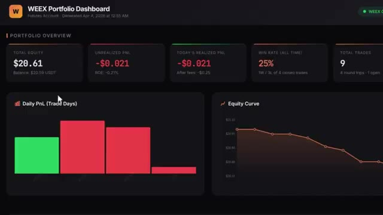
🔍 Agrandir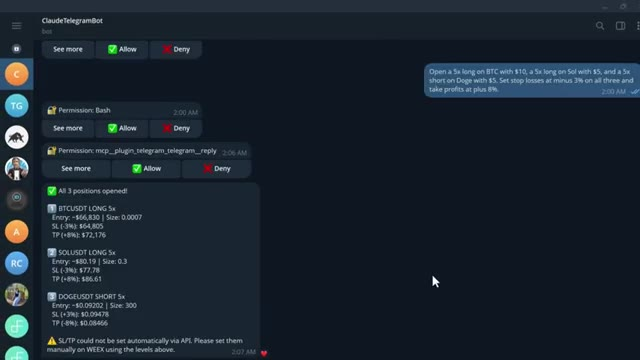
🔍 Agrandir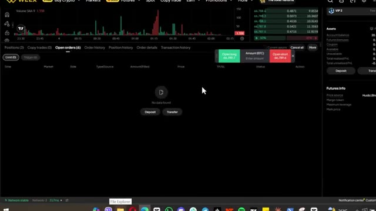
🔍 AgrandirMais regardez ce qu'il peut faire. Vous pouvez pratiquement ouvrir une position de trading avec une seule phrase. Ouvrez un long cinq fois sur l'ETH avec 10 dollars. Définissez le stop loss à moins 3 pour cent et le take profit à plus 8 pour cent. Regardez-le réfléchir. Et voilà. Position ouverte. Stop loss défini. Take profit défini. Confirmation en retour avec tous les détails. Une seule phrase.
Interface & Outils : Terminal de commandes Claude Code et interface de l'échange WEEX.
Contenu textuel & Code : Prompt textuel : « Open a 5x long on ETH with $10, set stop loss at minus 3% and take profit at plus 8% », et graphiques de prix avec carnets d'ordres sur WEEX.
Action / Démonstration : Exécution d'une commande textuelle pour placer un ordre de trading automatisé sur ETH avec effet de levier et gestion du risque.
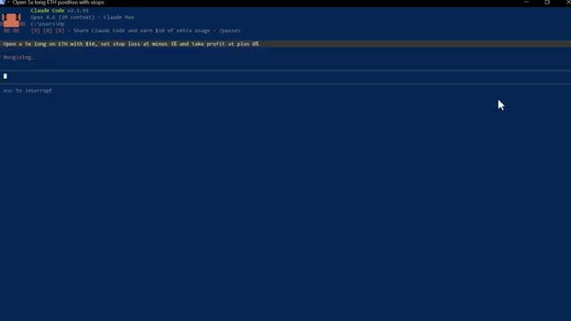
🔍 Agrandir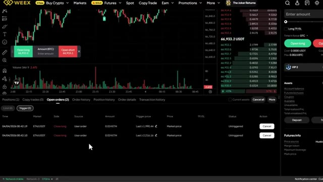
🔍 AgrandirC'est fait. Maintenant, laissez-moi vous montrer quelque chose qui m'a vraiment époustouflé la première fois que j'ai exécuté ceci. Donnez-moi un tableau de bord de portefeuille complet. Toutes mes positions, profits et pertes, frais de financement, courbe de capital, sous forme de rapport visuel. Regardez-le fonctionner. Il extrait chaque donnée de mon compte en ce moment même. Et voici ce qu'il génère. Un tableau de bord complet en mode sombre, une courbe de capital, un taux de réussite, des revenus de financement ventilés par crypto-monnaie, chaque position ouverte avec la distance de liquidation mise en évidence.
Interface & Outils : Interface de terminal CLI (Claude Code) et tableau de bord Web (WEEX Portfolio Dashboard).
Contenu textuel & Code : Détails de position ETH (levier 5x, prix d'entrée $2,052.00, TP $2,216.16, SL $1,990.44), métriques de portefeuille (Total Equity $20.61, Unrealized PnL -$0.021, Win Rate 25%, Total Trades 9), graphiques de PnL journalier et courbe de capital.
Action / Démonstration : Saisie d'une commande dans le terminal pour générer un rapport de portefeuille visuel, puis affichage du tableau de bord généré avec les performances et statistiques de trading.
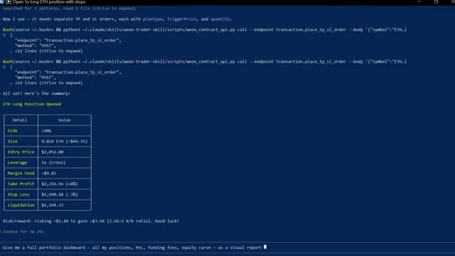
🔍 Agrandir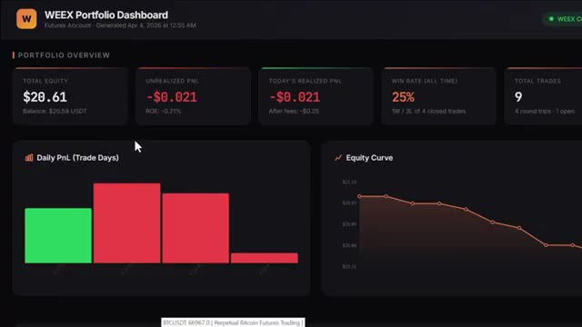
🔍 AgrandirC'est le genre de rapport qu'un bureau de trading professionnel produirait. Je l'ai obtenu en quelques secondes à partir d'une seule consigne et d'ailleurs, si vous trouvez cela utile jusqu'à présent, restez jusqu'à la fin parce que je vais vous montrer comment configurer tout cela vous-même, continuez à regarder. Très bien, laissez-moi vous montrer plus. Vous pouvez également connecter ceci à votre Telegram pour envoyer des commandes directement depuis votre téléphone. Vous pouvez taper "analyser toutes les paires de futures et trouver les taux de financement les plus élevés en ce moment". Il a analysé chaque paire, les a classées par taux de financement, a calculé le rendement annualisé et m'a dit exactement dans quelle direction me positionner pour percevoir ce financement.
Interface & Outils : Site web de configuration et application de messagerie (Telegram).
Contenu textuel & Code : Menus de configuration d'API, cas d'utilisation pour l'IA, instructions de connexion et messages de pont entre Telegram et une session de code.
Action / Démonstration : Présentation du processus de configuration et des outils d'automatisation du trading par l'IA.
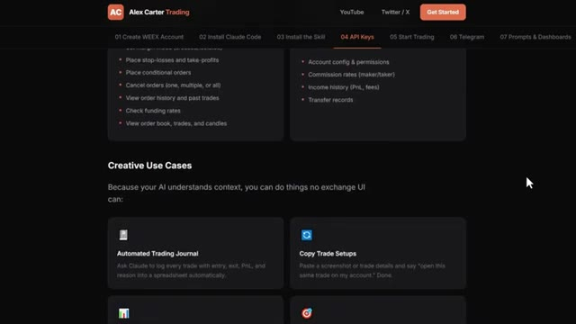
🔍 Agrandir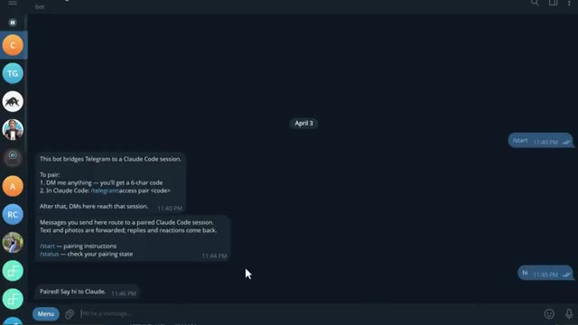
🔍 Agrandirinstantanément. Maintenant, si vous ne savez pas ce que sont les taux de financement, il s'agit essentiellement d'argent gratuit que l'échange verse toutes les huit heures aux traders qui sont positionnés du bon côté du marché. Lorsque le financement est positif, les positions longues paient les courtes. Lorsque le financement est négatif, les positions courtes paient les longues. Et certains de ces taux sont extrêmement élevés. Ce que fait ce scanner, c'est trouver les paires où ce taux est le plus élevé. Calculer ce que cela représente sur une base annuelle. Parfois 50 %, 100 %, voire plus, et vous dire exactement dans quelle direction ouvrir une position pour vous asseoir et percevoir ce paiement toutes
Interface & Outils : Interface de la plateforme de trading WEEX et application de messagerie Telegram (bot de scan).
Contenu textuel & Code : Graphique de prix BTC/USDT, carnet d'ordres, et liste de paires crypto classées par taux de financement positif (Longs Pay Shorts) et négatif (Shorts Pay Longs).
Action / Démonstration : Présentation visuelle de l'interface d'un échange et d'un rapport de scan automatisé des taux de financement par un bot Telegram.
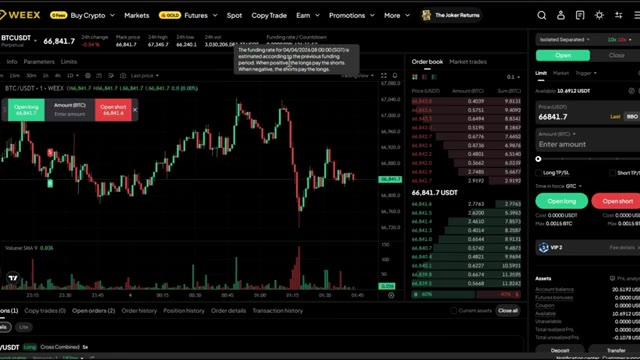
🔍 Agrandir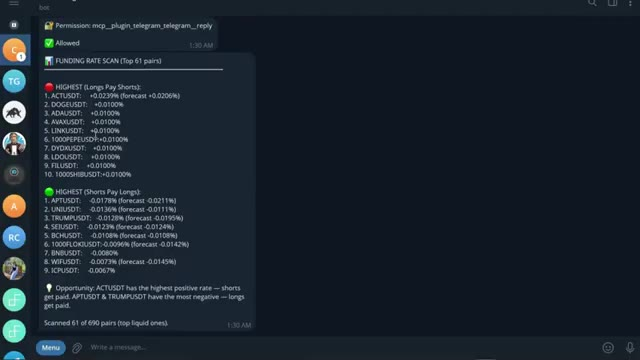
🔍 Agrandirhuit heures. Vous n'essayez même pas de prédire la direction des prix. Vous vous contentez de cultiver le taux. Et maintenant, au lieu de vérifier manuellement chaque paire vous-même, ce que personne ne fait, Claude le fait en quelques secondes et vous sert l'opportunité sur un plateau. Maintenant, cette prochaine section, c'est là que ça devient vraiment intéressant. Et honnêtement, c'est l'une de mes choses préférées que j'ai construites avec Claude.
Interface & Outils : Telegram, plateforme de trading WEEX et page web d'Alex Carter Trading.
Contenu textuel & Code : Liste des taux de financement (Funding rates) pour différentes paires de cryptomonnaies (ACTUSDT, DOGEUSDT, ADAUSDT, etc.) et données de marché sur la plateforme WEEX.
Action / Démonstration : Consultation des opportunités de taux de financement générées par un bot Telegram et navigation sur la plateforme de trading.
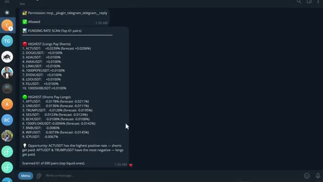
🔍 Agrandir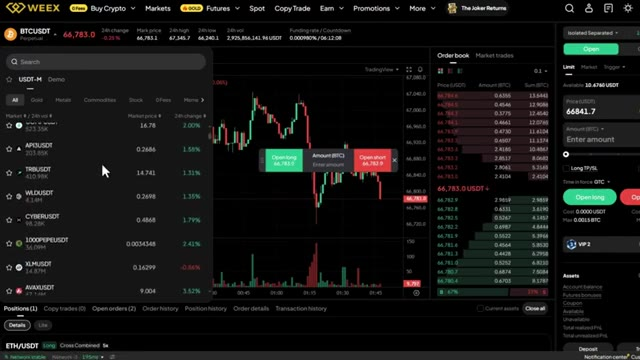
🔍 AgrandirEt si vous pouviez analyser 33 000 portefeuilles sur Hyperliquid ? Trouver les 20 meilleurs traders les plus rentables. Voir exactement ce qu'ils achètent en ce moment même. Leurs prix d'entrée, leur effet de levier, leur P&L non réalisé, et obtenir un plan de trading complet basé sur tout cela. Aucune clé API nécessaire, pas de codage, pas de recherche manuelle. Maintenant, Hyperliquid. Très rapidement, c'est un échange décentralisé de contrats perpétuels fonctionnant sur sa propre blockchain. Pas de KYC, pas d'intermédiaire. Et comme c'est entièrement sur la chaîne, chaque transaction, chaque position, chaque portefeuille, tout est public. C'est ce qui rend cela possible.
Interface & Outils : Terminal de script CLI personnalisé (Hyperliquid Whale Scan) et interface Web de l'échange décentralisé Hyperliquid.
Contenu textuel & Code : Tableaux d'analyse de portefeuilles (Smart Money vs Rekt Money), métriques de positions (Long/Short, P&L, prix d'entrée) et options de connexion de portefeuilles Web3.
Action / Démonstration : Analyse comparative des positions des baleines rentables face aux traders perdants, suivie d'une présentation d'un plan de trading complet sur XMR et d'une démonstration de connexion sur Hyperliquid.
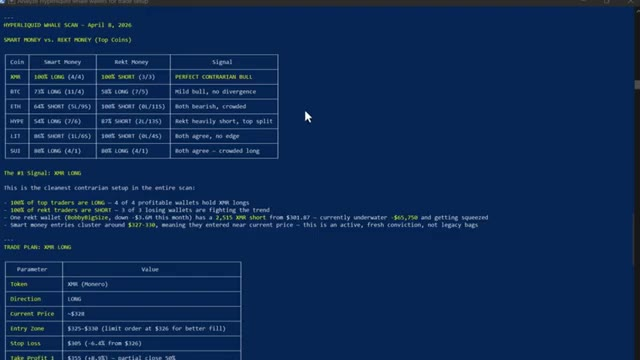
🔍 Agrandir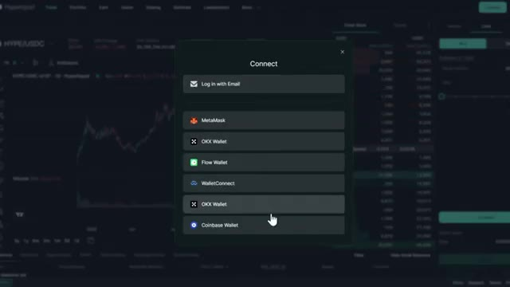
🔍 AgrandirTrès bien, laissez-moi ouvrir Claude Code et vous montrer ça en direct. Voici la première chose que je veux vous montrer. Claude analyse les 20 portefeuilles les plus rentables sur Hyperliquid en ce moment, extrait toutes les positions ouvertes et les classe par rentabilité totale. Le tout en un seul coup. Regardez ce qui se passe. Claude accède aux points de terminaison publics d'Hyperliquid, commence à extraire les données des portefeuilles parmi 33 000 adresses, les classe par rentabilité et commence à rédiger le rapport. Vous pouvez le voir traiter les portefeuilles en temps réel.
Interface & Outils : Terminal de commandes / script CLI (Hyperliquid whale tracker bot).
Contenu textuel & Code : Métriques du portefeuille sélectionné (All-Time PnL: +$204.4M, ROI 202%, Monthly PnL: +$5.28M, Account Value: $71.0M) et tableau des positions clés (BTC, ETH, SOL, ENA, LINK, etc., avec direction Long/Short, taille, prix d'entrée, effet de levier et PnL latent uPnL).
Action / Démonstration : Exécution d'un script d'analyse en direct via Claude Code extrayant et classant les positions des portefeuilles les plus rentables d'Hyperliquid.
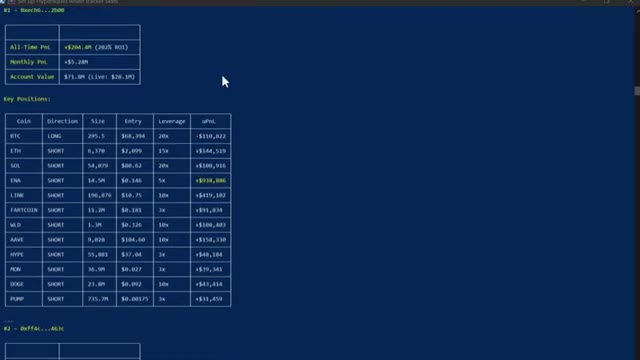
🔍 AgrandirPrix d'entrée, effet de levier, P&L non réalisé, tout arrive en direct. Et voici le résultat. Le top 20 des baleines classées, chaque position ouverte listée, et en bas, le résumé du sentiment général. En ce moment, l'argent intelligent est acheteur net sur le Bitcoin et vendeur net sur presque tout le reste, en particulier l'Ethereum.
Interface & Outils : Terminal de commande / Console Windows PowerShell exécutant un script de tracking Hyperliquid ("Set up Hyperliquid Whale Tracker").
Contenu textuel & Code : Données brutes au format JSON pour divers tokens (LIC, IDO, XRP, WIF, MOODENG) affichant les attributs de position : direction, size, entry_price, unrealized_pnl, leverage, liquidation_price.
Action / Démonstration : Récupération et affichage en temps réel des données des positions ouvertes des baleines via l'API de Hyperliquid.
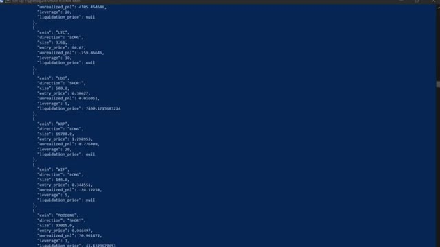
🔍 AgrandirC'est le genre de signal qui prenait autrefois des heures à reconstituer manuellement. Claude le fait en moins d'une minute. Maintenant, c'est là que ça devient vraiment intéressant. Ce prompt compare les 20 portefeuilles les plus rentables aux 20 portefeuilles les plus perdants et trouve chaque token où ils se trouvent de part et d'autre du trade. Regardez-le extraire les deux groupes simultanément. Les portefeuilles rentables d'un côté, les portefeuilles perdants de l'autre, et ensuite il commence à croiser les positions.
Interface & Outils : Terminal de commande / Interface CLI (Claude Code).
Contenu textuel & Code : Tableau comparatif pour différents tokens (ETH, FARTCOIN, XMR, TRX, PENDLE, TAO, etc.) montrant le pourcentage de positions Long de la Smart Money face aux positions Short de la « Rekt Money », l'écart en points de pourcentage et le signal résultant (ex. « Strong bull signal », « Max divergence bull »).
Action / Démonstration : Analyse de sentiment et de positionnement contrarien basée sur le scan de 33 381 portefeuilles du classement Hyperliquid.
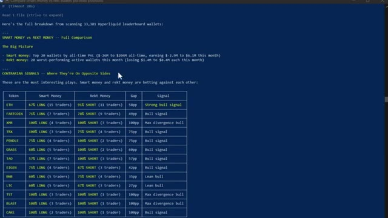
🔍 AgrandirVoici le résultat. Vous pouvez voir où les deux groupes sont d'accord. Ils sont tous les deux long sur Sui. C'est donc un trade encombré. Mais regardez ceci. La smart money est massivement long sur XMR, TRX, Pendle et Farcoin, tandis que les traders rekt sont short sur ces cryptos. Cette divergence juste là, c'est le signal. C'est le genre d'analyse pour laquelle les hedge funds paient. Vous l'obtenez grâce à un outil d'IA à 20 $ et une API publique gratuite. Et si vous voulez la configuration Hyperliquid complète, le code de la compétence, chaque prompt, le système complet de suivi des baleines, je vais vous dire exactement comment obtenir tout cela dans un instant. Continuez à regarder.
Interface & Outils : Terminal de données et tableaux d'analyse sur fond bleu, site web d'Alex Carter Trading.
Contenu textuel & Code : Tableaux comparatifs détaillant les pourcentages de positions longues pour divers tokens cryptographiques (Smart % Long vs Rekt % Long) et listes de conclusions clés sur le trading.
Action / Démonstration : Présentation des données en temps réel issues du classement public d'Hyperliquid pour analyser les divergences de positions.
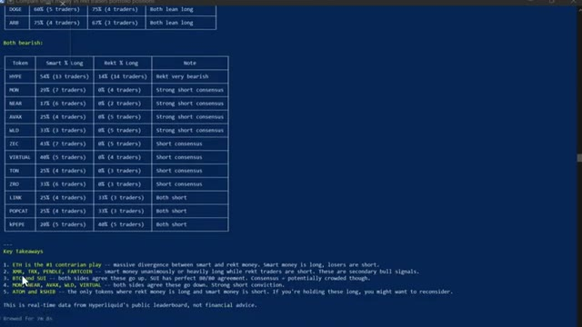
🔍 AgrandirMaintenant, si vous êtes prêt à aller encore plus loin, vous pouvez utiliser Claude Code pour créer un bot de trading entièrement automatisé de A à Z pour les cryptos, les actions ou quel que soit le marché sur lequel vous tradez. Et honnêtement, c'est ainsi que Claude va changer notre façon de trader pour toujours. Et nous l'avons déjà fait auparavant. Laissez-moi vous montrer à quoi ressemble réellement le résultat final.
Interface & Outils : Terminal de commande Claude Code et site web du courtier Interactive Brokers (TWS).
Contenu textuel & Code : Version de Claude Code (v2.1.91), interface de trading TWS avec graphiques en chandeliers et tableau de suivi de portefeuille.
Action / Démonstration : Présentation des outils de développement assistés par IA et des plateformes de courtage pour le trading automatisé.
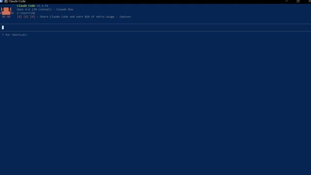
🔍 Agrandir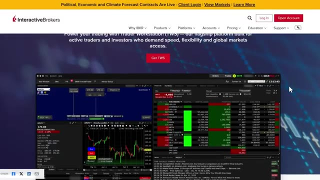
🔍 AgrandirVoici le tableau de bord. Une seule URL. Chaque position, votre courbe de capital, le statut de votre bot, vos données sur les baleines, tout en direct, tout au même endroit. Fini les multiples onglets de navigateur. Fini de douter de vos entrées. Et chaque matin, avant même d'ouvrir votre ordinateur portable, ce brief alpha quotidien est déjà dans votre boîte de réception.
Interface & Outils : Tableau de bord WEEX et terminal de commandes CLI.
Contenu textuel & Code : Métriques de compte (Equity 19.78, Available 19.78), courbe de capital sur 90 jours, et tableau de briefing incluant prix, variation sur 24h, distance par rapport à la moyenne mobile 200 EMA, RSI et biais de marché.
Action / Démonstration : Présentation du tableau de bord centralisé du bot de trading et affichage du briefing matinal automatisé généré par le système.
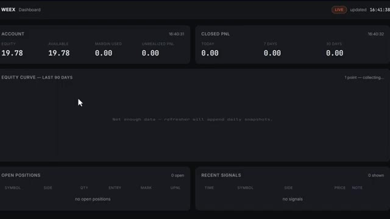
🔍 Agrandir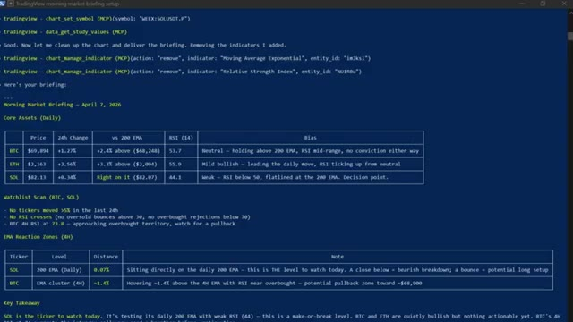
🔍 AgrandirTous les jours à l'heure et prêt à lire. Il a déjà scanné les baleines, lu les graphiques, vérifié votre compte, et vous a remis la configuration avec la plus forte conviction de la journée, dimensionnée selon votre risque exact. Une seule consigne. Toute la pile. Et le bot lui-même n'est pas assis sur votre ordinateur portable. Il tourne 24h/24 et 7j/7 sur un serveur cloud.
Interface & Outils : TradingView, WEEX, Terminal de commande CLI
Contenu textuel & Code : Graphique en chandeliers 4h du Bitcoin, tableau de prix et de biais pour les actifs majeurs (BTC, ETH, SOL), analyse des indicateurs EMA et RSI, et zones de réaction.
Action / Démonstration : Présentation de la configuration de marché quotidienne et analyse technique automatisée des cryptomonnaies.
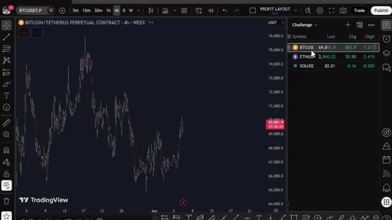
🔍 Agrandir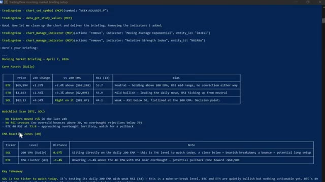
🔍 AgrandirSi ça plante, ça redémarre tout seul. Si votre Wi-Fi se coupe, ça continue. Votre ordinateur portable n'est que la télécommande. Désormais, la barrière mathématique pour construire tout cela a pour ainsi dire disparu. Avant des modèles capables comme Claude Code, cela aurait pris des semaines, voire des mois, à assembler. Maintenant, vous pouvez passer d'une idée à un système fonctionnel en un après-midi.
Interface & Outils : Éditeur GNU nano (terminal SSH) et interface web de la plateforme de cours 'Trading AI Full Course'.
Contenu textuel & Code : Commandes de configuration SSH et liste des modules de formation couvrant les scripts Python, les bots de trading, les intégrations d'API (WEEX, Alpaca, Kalshi) et l'utilisation de Claude.
Action / Démonstration : Modification des paramètres de configuration du serveur et navigation dans le catalogue des modules du cours de trading automatisé.
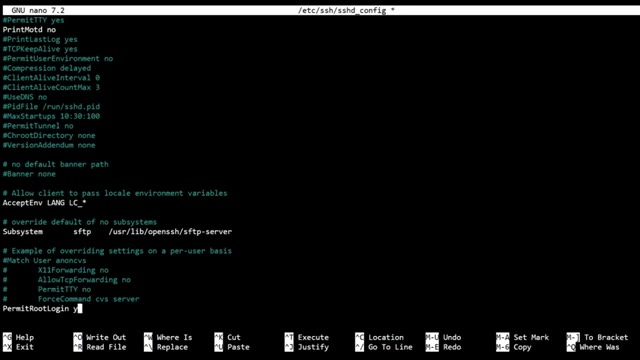
🔍 Agrandir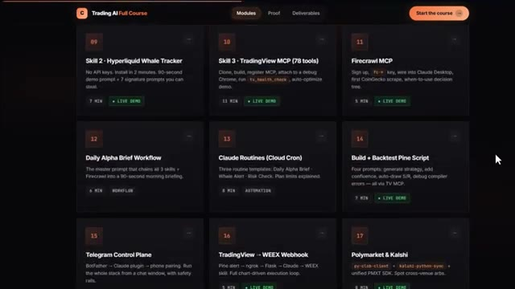
🔍 AgrandirEt c'est important parce que la plupart des stratégies ne fonctionnent pas. L'avantage n'est pas d'avoir une stratégie parfaite. Il réside dans la capacité à tester suffisamment d'idées assez rapidement pour trouver celles qui fonctionnent vraiment. Très bien, et écoutez, au cours des prochaines années, il existera deux types de traders. Ceux qui utilisent l'intelligence artificielle et ceux qui font encore tout manuellement.
Interface & Outils : Éditeur de code (Notepad/IDE) et interface graphique de TradingView.
Contenu textuel & Code : Code source Pine Script (gestion des signaux d'achat/vente et des labels) et graphique de prix BTCUSDT avec indicateurs techniques (BB, Volume, RSI 14).
Action / Démonstration : Présentation du code de stratégie de trading et visualisation des indicateurs sur un graphique de prix.
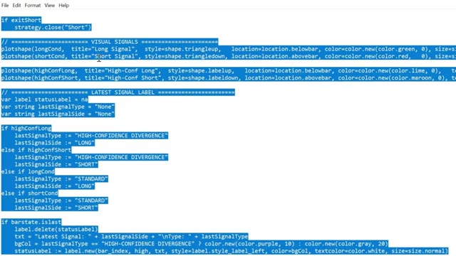
🔍 Agrandir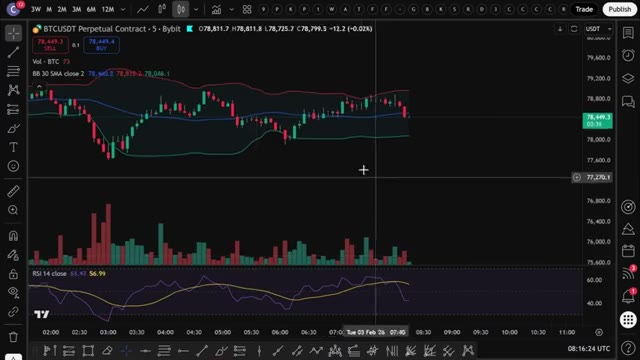
🔍 AgrandirMême marché. Des résultats très différents. Voici comment vous vous mettez du bon côté de cela. J'ai rassemblé tout ce qui se trouve au sein de la communauté AI Trade Edge. Chaque invite, chaque bot, chaque modèle, chaque guide étape par étape que j'utilise personnellement, le tout en un seul endroit. Et tout ce que je construirai à l'avenir sera ajouté directement dans le groupe dès sa sortie.
Interface & Outils : Navigateur web (plateforme Whop et site de formation d'Alex Carter Trading)
Contenu textuel & Code : Présentation des outils de la communauté 'AI Trade Edge' et liste des fonctionnalités d'automatisation et de contrôle de graphiques par l'IA.
Action / Démonstration : Présentation de l'offre d'abonnement et des guides pratiques inclus dans la communauté.
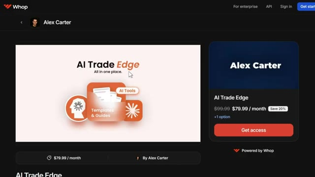
🔍 Agrandir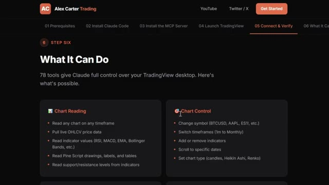
🔍 AgrandirNous testons également des stratégies provenant de tout l'internet. En les automatisant grâce à PineScript, en les exécutant en direct, et en partageant exactement ce qui fonctionne et ce qui ne fonctionne pas. Ainsi, vous n'obtenez pas seulement des outils. Vous obtenez une opération de recherche en direct. À l'intérieur, il y a également un cours complet de trading agentique. 2 heures et demie.
Interface & Outils : Interface web de présentation de code et graphique TradingView (BloFin).
Contenu textuel & Code : Code Pine Script v5 (indicateur "RSI VWAP + Extreme Reversal Setup") et graphique des prix ETHUSDT avec indicateur de tendance et oscillateur en sous-fenêtre.
Action / Démonstration : Affichage du code source de l'indicateur puis transition vers la démonstration graphique du système sur l'exchange.
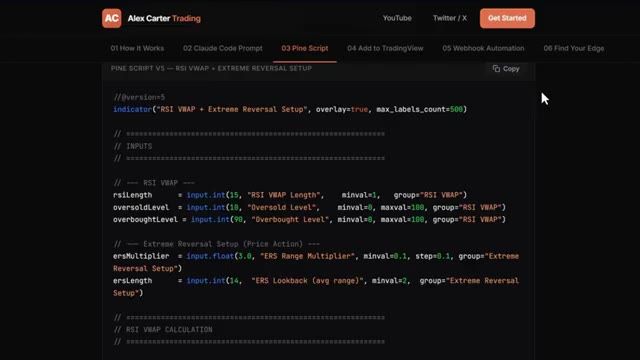
🔍 AgrandirDu débutant à l'expert. Aucune base en programmation n'est nécessaire. À la fin, vous aurez votre propre système de trading par IA opérationnel en direct. Quelque chose que la plupart des traders particuliers ne savent même pas être possible actuellement. 79,99 $ par mois. Un seul bon trade suffit à couvrir les frais. Et les 100 premiers membres bloquent ce tarif de façon permanente.
Interface & Outils : Interface web de formation et plateforme de paiement Whop.
Contenu textuel & Code : Titres des modules de formation axés sur le trading par IA, les bots Python, le déploiement VPS et le tableau de bord Live-Ops, ainsi que le tarif d'abonnement à 79,99 $ par mois.
Action / Démonstration : Navigation à travers les modules du cours et présentation de l'offre d'abonnement commercial.
Après cela, le prix augmente. Le lien est dans la description. Vous ne pouvez vraiment pas vous permettre de rater ça. Et c'est tout. C'est ainsi que Claude change le trading pour toujours et comment vous pouvez en faire partie. Si vous voulez approfondir chacun d'eux individuellement, la vue complète du trading, la présentation de Telegram et le suivi des baleines sur Hyperliquid, toutes ces vidéos apparaissent à l'écran dès maintenant.
Interface & Outils : Telegram Desktop, plugin MCP Telegram / terminal de trading, exchange WEEX.
Contenu textuel & Code : Positions exécutées en arrière-plan (BTCUSDT LONG 5x, SOLUSDT LONG 5x, DOGEUSDT SHORT 5x avec prix d'entrée, TP à +8% et SL à -3%), prompt multimodal demandant une analyse des graphiques et du carnet d'ordres WEEX pour ouvrir un trade à haute probabilité.
Action / Démonstration : Soumission d'un prompt multimodal enrichi de captures d'écran pour déléguer l'analyse technique, le calcul du risque et l'exécution d'ordres à un agent IA via Telegram.
Allez voir tout ça à votre rythme. Et si vous voulez le guide complet étape par étape sur la façon de construire votre propre système de trading agentique en utilisant Claude, cette vidéo s'affiche également à l'écran. Allez voir ça ensuite. Si vous avez trouvé cela utile, laissez un pouce bleu. Ça aide vraiment la chaîne. Abonnez-vous si ce n'est pas déjà fait. Et je vous vois dans la prochaine.
Interface & Outils : Aucune interface visible.
Contenu textuel & Code : Aucun contenu technique, code ou graphique affiché.
Action / Démonstration : Aucune action ou manipulation en cours.